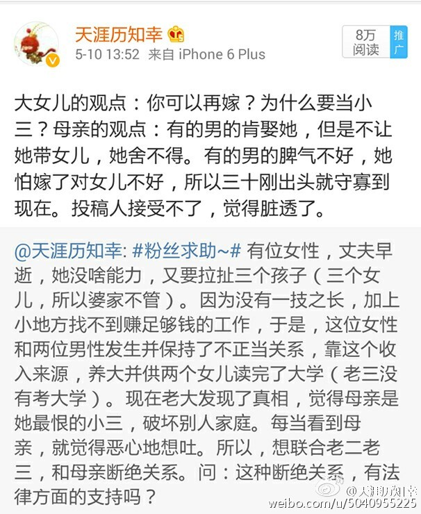

赞同严锋老师的评价。 //@严锋:这些女儿都不如畜牲啊！
@天涯历知幸:
关于妈妈当小三，拉扯大三个女儿的事，投稿人看到大家的评论，发来后续：1 投稿人说她们家在小城市，她妈妈的事情，肯定会有很多人知道，你们有没有想过，有这样一个妈，她怎么在外人面前抬起头？2 她现在已经大学毕业了，并且在大城市有了工作，有一个非常相爱的男朋友，她一直不敢跟男朋友说她的家庭情况，并且非常担心她男朋友知道她有一个这样的妈。3 她目前能够想到的解决方案，就是彻底切断和她妈妈的所有联系，她已经准备好和她妈妈摊牌，不希望她妈妈的事，影响她将来的生活。这不是自私，这是人之常情。谁不希望有正常的父母？4 她和她妈妈现在已经吵过一架，因为男朋友的事，她已经见过她男朋友的父母，她妈妈希望见见她男朋友。但是她告诉她妈妈，她准备和男朋友的父母说，她父母双亡，是娘娘（这个词汇我不懂，是指？）带大。她妈妈很伤心，她说她何尝不伤心？但是，除了这样，她没有办法。以上是投稿人的解释。下面我bb几句，作为一个接受投稿求助的博主，我从来没有在投稿人不愿意的情况下，暴露投稿人的名字。所以，既然投稿，就不要用私密短信，而且把私密短信时间设置成3秒，同时反复强调不要截图，不要暴露id，我认为，这是对我的不信任，我不喜欢这种态度。
- 